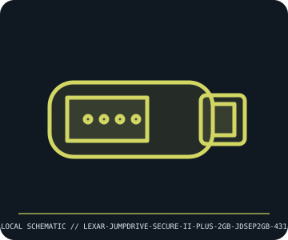

[ REMOVABLE MEDIA // MODEL-SPECIFIC RECORD ]
Lexar JumpDrive Secure II Plus 2 GB (JDSEP2GB-431)
Lexar USB 2.0 Secure II Plus removable flash drive, 2 GB model. This catalog entry distinguishes the removable medium from its drive/reader and calls out model-specific fit and format caveats.

IDENTIFICATION: Transcribe the entire model/part number, capacity, generation and revision from the label or packaging. Confirm the exact host-device manual before inserting or writing.
Format, capacity and compatibility
| Product / part ID | Lexar JumpDrive Secure II Plus 2 GB (JDSEP2GB-431) |
|---|---|
| Generation / format | Lexar USB 2.0 Secure II Plus removable flash drive, 2 GB model |
| Capacity and medium | Lexar JDSEP2GB-431, 2 GB USB 2.0 Type-A flash drive. Period Secure II Plus software provides an encrypted vault/password feature; software availability/OS support is separate from the USB mass-storage function. |
| Compatibility | Works as USB mass storage on a host USB port with a supported filesystem. Legacy encryption utility compatibility depends on period OS/software and may not run on current systems; retrieve data through ordinary mass-storage access where possible and do not assume its software vault is interoperable. |
| Version and model caveat | Secure II, Secure II Plus, and similarly named JumpDrive SKUs vary by capacity, body, and software revision. Verify JDSEP2GB-431 label and do not treat product marketing as proof that old encryption software remains supported or secure today. |
Handling and preservation
Cap the connector when not in use; avoid bending, static discharge, moisture, and heat. Never unplug while writing. Before preservation, copy contents out of any proprietary vault with known-compatible software, retain the original installer/license context, and verify capacity and checksums.
- Preserve original packaging, label, acquisition notes and any write-protect state; photograph the media before use.
- Make at least two independent copies of valuable data, verify checksums, and periodically test a restore. A removable cartridge or card alone is not an archival strategy.
Model and version notes
Secure II, Secure II Plus, and similarly named JumpDrive SKUs vary by capacity, body, and software revision. Verify JDSEP2GB-431 label and do not treat product marketing as proof that old encryption software remains supported or secure today.
Standards and product-family sources establish the generation; exact model manuals, labels, regional revisions, firmware, interface and host support determine actual interchangeability.
Sources and standards
- Lexar JumpDrive Secure II Plus datasheet (revision A)Product datasheet reference for Secure II Plus family features and model variants.
- USB Implementers Forum — USB specificationsPrimary standards reference for USB interface terminology; this product is USB 2.0 generation.
Manufacturer and standards references are preferred; archival manuals or museum records are identified when products are discontinued. Capacity and compatibility claims are scoped to the specific SKU and generation named above.